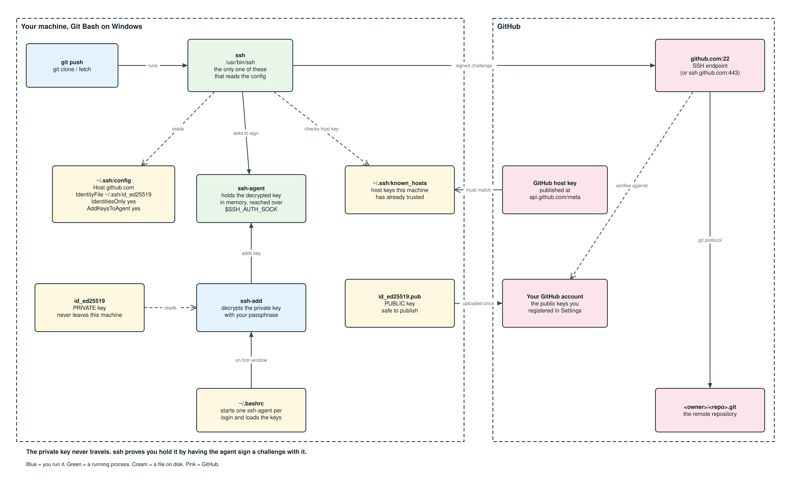

GitHub SSH Setup, Start to Finish (Git Bash)
Practical runbook for creating an SSH (Secure Shell) key, loading it into the ssh-agent, registering it with GitHub, and proving the whole chain works.
Everything here targets Git Bash on Windows and assumes you are typing into it. Most of the commands are plain POSIX (Portable Operating System Interface) shell and would carry over to macOS or Linux unchanged, but this document does not cover those platforms, because the parts that make it work are Windows specific: clip.exe, winpty, MSYS_NO_PATHCONV and /c/... drive paths.
Every command is copy pasteable.
Contents
Figures
1. Git Bash specifics you need to know first
2. Quick path (if you just want it working)
3. The full procedure
3.1 See what you already have
3.2 Choose a key type (ranked)
3.3 Generate the key
3.4 Get the ssh-agent running
3.5 Load the key into the ssh-agent
3.6 Verify the ssh-agent and the loaded keys
3.7 Register the public key with GitHub (ranked)
3.8 Test the connection to GitHub manually
3.9 Verify you are talking to the real GitHub
3.10 The ~/.ssh/config file
3.11 Make Git actually use the key
4. Start the ssh-agent automatically in every Git Bash window
4.1 Check that Git Bash reads ~/.bashrc at startup
4.2 Add the startup block
4.3 Apply it and confirm it works
4.4 Load more than one key
4.5 What happens when a key has a passphrase
4.6 What to expect, and how to undo it
5. Multiple GitHub accounts or keys
6. Optional: sign commits with the same SSH key
7. File permissions
8. Troubleshooting matrix
9. Full verification checklist
10. Cheat sheet
11. Terminology
12. References (every link checked, HTTP 200)
Figures
Figure 1. How Git, ssh, the ssh-agent, your two key halves and GitHub fit together
1. Git Bash specifics you need to know first
~is your home directory and~/.sshis where every key lives. Confirm where you are:
bash echo "$HOME" && pwd- Git Bash ships its own OpenSSH at
/usr/bin/ssh, and Git calls it by default. Leavecore.sshCommandunset sogit,sshandssh-addall use that one client and therefore onessh-agent. Verify with:
bash which -a ssh && git config --global --get core.sshCommand
You want/usr/bin/sshand empty output. - Drive letters are mounted under a single slash, so a folder like
C:\git\<repo>is/c/git/<repo>. - Paths starting with
/are sometimes rewritten by MSYS2 (the Unix compatibility layer Git Bash is built on). If an argument gets mangled, prefix the command withMSYS_NO_PATHCONV=1. - If an interactive prompt hangs or you see
the input device is not a TTY, prefix the command withwinpty, for examplewinpty ssh -T git@github.com. clip.exeis the clipboard helper Git Bash gives you, used in section 3.7.- Every step below that runs a command starts with a "Run from" line telling you which directory to be in. Most steps work from anywhere because the paths are absolute, but the Git steps genuinely need you to be inside a repository. Check where you are at any time:
bash pwd
2. Quick path (if you just want it working)
Run from: anywhere. Every path below is absolute (~/.ssh/...), so the current directory does not matter. If you want to be certain, start at your home directory:
cd ~ && pwd
Generate the key pair:
ssh-keygen -t ed25519 -C "<email>" -f ~/.ssh/id_ed25519
Start an ssh-agent in this shell:
eval "$(ssh-agent -s)"
Load the key into it, typing the passphrase once:
ssh-add ~/.ssh/id_ed25519
Copy the public key to the clipboard:
cat ~/.ssh/id_ed25519.pub | clip.exe
Paste the clipboard into https://github.com/settings/keys, then verify:
ssh -T git@github.com
Expected: Hi <username>! You've successfully authenticated, but GitHub does not provide shell access.
Make the ssh-agent survive new Git Bash windows with the ~/.bashrc block in section 4. The rest of this document explains each step and every verification command.
3. The full procedure
Before the steps, here is what you are building. Every box below is something these eleven steps create, configure or check, and the arrows are what talks to what:

Figure 1. How Git, ssh, the ssh-agent, your two key halves and GitHub fit together. The one thing to take from it is that the private key never leaves the machine: ssh proves you hold it by having the ssh-agent sign a challenge with it.
Eleven steps, in order. Each step is numbered so you can jump straight back to it: step 4 is section 3.4, and its sub steps are 3.4.1 onward. If you followed the quick path above and it worked, you only need the steps that failed.
3.1 See what you already have
Run from: ~/.ssh, so the listing below shows what you expect. Create the directory if it is not there yet:
mkdir -p ~/.ssh && chmod 700 ~/.ssh && cd ~/.ssh && pwd
Expected output: /c/Users/<username>/.ssh
3.1.1 Which SSH client is this shell using?
A machine can carry several OpenSSH installations, and mixing them is the cause of most "it works in one terminal but not the other" confusion. List every one on the path:
which -a ssh ssh-add ssh-keygen
Then check the version of the one that wins:
ssh -V
- Confirm the winner is
/usr/bin/ssh, the Git Bash OpenSSH, which is the assumption of this whole guide. Windows ships a second OpenSSH under/c/Windows/System32/OpenSSH, and that one keeps its own separatessh-agent, so a key loaded here is invisible to it. - Check which client Git itself will call:
bash git config --global --get core.sshCommand
Empty output means Git uses/usr/bin/ssh, which is what you want. If it prints a path, clear it:
bash git config --global --unset core.sshCommand
3.1.2 Do keys already exist?
Look before you generate, because a new key with a default name overwrites an old one without asking twice. The -a flag matters here, since most of these files are hidden:
ls -la ~/.ssh
- Files with no extension (
id_ed25519,id_rsa) are private keys. Never share or paste these. - Files ending
.pubare public keys. These are what GitHub wants. known_hosts,config,authorized_keysare not keys.
3.1.3 Fingerprint every key you already have
A fingerprint is how you tell which local file corresponds to which key registered on GitHub. Print one for every public key in the directory:
for f in ~/.ssh/*.pub; do ssh-keygen -l -f "$f"; done
Output format: 256 SHA256:<fingerprint> <comment> (ED25519). Compare that fingerprint against what GitHub lists at https://github.com/settings/keys to know which local key matches which registered key.
3.2 Choose a key type (ranked)
Four types worth considering, and one group to avoid outright:
| Rank | Option | Flag | Why / why not |
|---|---|---|---|
| 1 | Ed25519 | -t ed25519 |
Best default. Small, fast, strong, supported by GitHub and every OpenSSH 7.0+ (2015 onward). |
| 2 | Ed25519 on a hardware key (FIDO2, Fast IDentity Online v2) | -t ed25519-sk |
Highest security, the private key cannot be copied off the device. Needs OpenSSH 8.2+ and the physical key present at every use. |
| 3 | ECDSA (Elliptic Curve Digital Signature Algorithm) on a hardware key | -t ecdsa-sk |
Same hardware benefit, use only if your security key predates ed25519-sk support. |
| 4 | RSA (Rivest Shamir Adleman) 4096 | -t rsa -b 4096 |
Only for old servers or tooling that cannot parse Ed25519. Bigger and slower. |
| x | DSA (Digital Signature Algorithm), RSA 1024/2048 | n/a | Do not use. DSA is removed from modern OpenSSH, small RSA is deprecated. |
Recommendation: option 1, unless you own a security key, in which case option 2. Hardware backed keys need OpenSSH 8.2 or newer, so check ssh -V first.
3.3 Generate the key
Run from: ~/.ssh. This is where Git Bash and gh look by default, so keys kept anywhere else need extra configuration for no benefit.
cd ~/.ssh && pwd
The -f ~/.ssh/... argument in each command below is absolute, so the key lands in the right place even if you forget to cd. Being in ~/.ssh just means ls immediately shows you the result.
3.3.1 Ed25519 (recommended)
Generate the pair. The flags are explained immediately below, so you can read them before running anything:
ssh-keygen -t ed25519 -C "<email>" -f ~/.ssh/id_ed25519
-t= key type.-C= comment, conventionally your email. Purely a label to help you identify the key later.-f= output file. Naming per purpose (for example~/.ssh/id_ed25519_work) keeps multi account setups sane.- You are prompted for a passphrase. Use one. The
ssh-agentmeans you only type it once per session.
3.3.2 RSA fallback
Use this only when something in your toolchain cannot parse Ed25519. The -b 4096 is not optional in practice, because shorter RSA keys are deprecated:
ssh-keygen -t rsa -b 4096 -C "<email>" -f ~/.ssh/id_rsa
3.3.3 Hardware backed key
This needs OpenSSH 8.2 or newer and the security key physically present, both when you create it and every time you use it:
ssh-keygen -t ed25519-sk -C "<email>" -f ~/.ssh/id_ed25519_sk
Touch the security key when it blinks.
3.3.4 Confirm the pair was written
Both halves must exist, and the public half must be readable as a key rather than as whatever a mistyped redirect left behind:
ls -l ~/.ssh/id_ed25519 ~/.ssh/id_ed25519.pub && ssh-keygen -l -f ~/.ssh/id_ed25519.pub
3.3.5 Change or add a passphrase later
The passphrase protects the file, not the identity, so changing it leaves the key itself untouched and nothing needs re registering with GitHub:
ssh-keygen -p -f ~/.ssh/id_ed25519
3.3.6 Rebuild a lost public key from the private key
Deleting a .pub file is recoverable, because the public half can always be derived again from the private half. Losing the private key is not:
ssh-keygen -y -f ~/.ssh/id_ed25519 > ~/.ssh/id_ed25519.pub
3.4 Get the ssh-agent running
Run from: anywhere, cd ~ is a fine default. An ssh-agent belongs to a shell session, not to a directory, so your current location has no effect on it.
3.4.1 Options (ranked)
Three ways to have an ssh-agent available when you need one:
| Rank | Option | Best for | Trade off | Set up in |
|---|---|---|---|---|
| 1 | ssh-agent auto started from ~/.bashrc |
Everyday use | Passphrase once per reboot, and every Git Bash window shares the one ssh-agent |
Section 4 |
| 2 | 1Password or Bitwarden SSH agent | Teams already using that password manager | Biometric unlock instead of a passphrase, but adds a dependency and an IdentityAgent line in ~/.ssh/config |
Not covered here, follow the vendor documentation |
| 3 | eval "$(ssh-agent -s)" typed per shell |
One off work, CI (Continuous Integration) | Dies with the shell, and each new window starts a fresh empty ssh-agent |
Section 3.4.2 |
Recommendation: rank 1. It is rank 3 plus a dozen lines of ~/.bashrc, and it removes the most common daily annoyance, which is a new terminal window that has forgotten your key. Rank 2 is the only one with nothing written up here, because the setup belongs to the password manager rather than to Git Bash.
3.4.2 Start an ssh-agent for this shell
Start an ssh-agent that lives only as long as this window. The eval matters: ssh-agent -s only prints the environment variables, so without it the ssh-agent starts but this shell never learns how to reach it.
eval "$(ssh-agent -s)"
Kill it when you are done:
ssh-agent -k
This is enough to finish the rest of section 3. It does not survive the window closing, so once the whole chain works, section 4 makes Git Bash start the ssh-agent and load your keys for you.
3.5 Load the key into the ssh-agent
Run from: anywhere. The key paths are absolute.
ssh-add ~/.ssh/id_ed25519
Add with a lifetime, the ssh-agent forgets it after 8 hours:
ssh-add -t 8h ~/.ssh/id_ed25519
Git Bash has no system keychain to hand the passphrase to, so the ssh-agent forgets the key when the machine restarts. The ~/.bashrc block in section 4 is the Git Bash answer to that: it reloads the key into one shared ssh-agent on the first terminal you open, so you type the passphrase once per reboot rather than once per window.
3.6 Verify the ssh-agent and the loaded keys
Run from: anywhere. Nothing here touches the current directory.
Four independent checks.
3.6.1 Is an ssh-agent running, and is this shell talking to it?
These are two separate questions, and confusing them wastes a lot of time. First, is a process running anywhere on the machine?
ps aux | grep -i "[s]sh-agent"
Second, does this particular shell know how to reach one?
echo "SSH_AUTH_SOCK=$SSH_AUTH_SOCK"
echo "SSH_AGENT_PID=$SSH_AGENT_PID"
An empty SSH_AUTH_SOCK means this shell is not talking to any ssh-agent, even if one is running in another window. That is the number one Git Bash gotcha, and section 4 fixes it permanently.
3.6.2 Which keys does the ssh-agent currently hold?
Fingerprints only:
ssh-add -l
Full public keys, the exact text GitHub stores:
ssh-add -L
How to read the result:
| Output | Meaning | Fix |
|---|---|---|
256 SHA256:... comment (ED25519) |
Key is loaded and usable | Nothing to do |
The agent has no identities. |
ssh-agent runs, no key loaded |
ssh-add ~/.ssh/id_ed25519 |
Could not open a connection to your authentication agent. |
No ssh-agent reachable from this shell |
eval "$(ssh-agent -s)", then section 4 |
Error connecting to agent: No such file or directory |
Stale SSH_AUTH_SOCK pointing at a dead ssh-agent |
unset SSH_AUTH_SOCK then start a fresh ssh-agent |
Exit codes of ssh-add -l: 0 = keys present, 1 = ssh-agent reachable but empty, 2 = no ssh-agent reachable.
ssh-add -l; echo "exit code: $?"
One line health check:
ssh-add -l >/dev/null 2>&1; case $? in 0) echo "agent up, keys loaded"; ssh-add -l;; 1) echo "agent up, no identities";; 2) echo "no agent reachable from this shell";; esac
Reusable function, drop it in ~/.bashrc:
cat >> ~/.bashrc <<'EOF'
sshcheck() {
echo "client: $(command -v ssh) $(ssh -V 2>&1)"
echo "socket: ${SSH_AUTH_SOCK:-<none>}"
ssh-add -l >/dev/null 2>&1
case $? in
0) echo "agent: up, keys loaded"; ssh-add -l ;;
1) echo "agent: up, no identities" ;;
2) echo "agent: NOT reachable" ;;
esac
echo "github: $(ssh -o BatchMode=yes -T git@github.com 2>&1 | head -1)"
}
EOF
Then run sshcheck any time you want the full picture.
3.6.3 Does the ssh-agent key match the key on disk and the key on GitHub?
Print both fingerprints side by side so you can compare them in one glance rather than from memory:
ssh-add -l && ssh-keygen -l -f ~/.ssh/id_ed25519.pub
Both must print the same SHA256:... value, and that value must appear next to the key listed at https://github.com/settings/keys.
3.6.4 Removing keys from the ssh-agent
An ssh-agent holds a key until you remove it or the process dies, which matters when you are switching between accounts. To drop a single key:
ssh-add -d ~/.ssh/id_ed25519
To empty the ssh-agent completely:
ssh-add -D
-dremoves one key.-Dremoves every key.ssh-add -xandssh-add -Xlock and unlock thessh-agentwith a password.
3.7 Register the public key with GitHub (ranked)
Run from: anywhere. ~/.ssh is convenient if you want to cat id_ed25519.pub by short name.
cd ~/.ssh && pwd
Never upload the private key. Only the .pub file.
Print it:
cat ~/.ssh/id_ed25519.pub
Copy it to the clipboard. clip.exe is the Windows clipboard tool, and Git Bash can pipe straight into it:
cat ~/.ssh/id_ed25519.pub | clip.exe
Two ways to hand that key to GitHub, ranked:
| Rank | Option | How | Notes |
|---|---|---|---|
| 1 | GitHub CLI (Command Line Interface) | gh ssh-key add ~/.ssh/id_ed25519.pub --title "gitbash-laptop" |
Fastest and scriptable, needs gh auth login first. Manual: https://cli.github.com/manual/gh_ssh-key_add |
| 2 | Web interface | https://github.com/settings/keys then "New SSH key" | No extra tooling, and the only route on a machine without gh |
Both routes register the key for authentication. Signing commits needs the same public key uploaded a second time as a separate signing key, which is section 6.
Concrete commands for rank 1. Authenticate gh first, which opens a browser and stores a token, so it is a one time step per machine:
gh auth login
Upload the public key, with a title you will still recognise in a year:
gh ssh-key add ~/.ssh/id_ed25519.pub --title "gitbash-laptop"
Confirm GitHub actually has it:
gh ssh-key list
3.8 Test the connection to GitHub manually
Run from: anywhere. Section 3.8.4 uses git ls-remote with a full remote address, so even that works outside a repository.
3.8.1 The canonical test
Ask GitHub who it thinks you are. The -T skips the pseudo terminal, which GitHub does not grant anyway:
ssh -T git@github.com
- Success looks like
Hi <username>! You've successfully authenticated, but GitHub does not provide shell access. - The exit code is 1 even on success, because GitHub closes the shell. That is expected, not a failure.
Permission denied (publickey).means the key GitHub saw is not one it recognises.
Capture just the greeting:
ssh -T git@github.com 2>&1 | grep "^Hi"
Non interactive test that fails fast instead of prompting:
ssh -o BatchMode=yes -T git@github.com
3.8.2 Test one specific key, ignoring the ssh-agent
When you hold several keys, this proves which one GitHub accepts rather than leaving it to whichever the ssh-agent happens to offer first:
ssh -T -i ~/.ssh/id_ed25519 -o IdentitiesOnly=yes git@github.com
IdentitiesOnly=yes stops SSH offering every other key first. GitHub authenticates you as the owner of the first key it accepts, so without this flag you can silently connect as the wrong account.
3.8.3 Verbose test, to see which key was offered and accepted
Ask SSH to narrate every key it tries. The output is long, so the filtered version below is usually the one you want:
ssh -vT git@github.com
Filter the output down to the interesting lines:
ssh -vT git@github.com 2>&1 | grep -Ei "offering|server accepts|authenticated|identity file"
Offering public key: ... ED25519 SHA256:<fp> agentshows what was tried and where it came from.Server accepts key: ...shows the one that worked.Authenticated to github.comconfirms success.- Add more
vfor more detail, up tossh -vvvT git@github.com.
3.8.4 Test the real Git path end to end
ssh -T proves SSH works. This proves Git works, which is a longer chain and the one that actually fails in practice:
git ls-remote git@github.com:<owner>/<repo>.git | head -3
This exercises Git plus SSH plus your key without cloning anything.
3.8.5 If port 22 is blocked (corporate network, hotel WiFi)
Test the GitHub fallback endpoint on port 443:
ssh -T -p 443 git@ssh.github.com
If that works, make it permanent in ~/.ssh/config:
Host github.com
HostName ssh.github.com
Port 443
User git
Raw reachability check using the bash TCP (Transmission Control Protocol) pseudo device:
timeout 5 bash -c 'cat < /dev/null > /dev/tcp/github.com/22' && echo "port 22 open" || echo "port 22 blocked"
Fallback if /dev/tcp is unavailable:
curl -sv --max-time 5 telnet://github.com:22 2>&1 | head -3
3.9 Verify you are talking to the real GitHub
Run from: anywhere. ~/.ssh is convenient because known_hosts lives there.
On first connect SSH asks you to trust a host key (TOFU, Trust On First Use). Verify the fingerprint instead of typing yes blindly.
GitHub published host key fingerprints:
- Ed25519:
SHA256:+DiY3wvvV6TuJJhbpZisF/zLDA0zPMSvHdkr4UvCOqU - RSA:
SHA256:uNiVztksCsDhcc0u9e8BujQXVUpKZIDTMczCvj3tD2s - ECDSA:
SHA256:p2QAMXNIC1TJYWeIOttrVc98/R1BUFWu3/LiyKgUfQM
Confirm the live values yourself from the GitHub metadata API (Application Programming Interface):
curl -s https://api.github.com/meta | jq '.ssh_key_fingerprints'
Git Bash does not ship jq, so without it installed:
curl -s https://api.github.com/meta | grep -A4 ssh_key_fingerprints
Fingerprint the host key your machine actually sees, and compare it to the list above:
ssh-keyscan github.com 2>/dev/null | ssh-keygen -lf -
Inspect what is already pinned in known_hosts:
ssh-keygen -F github.com
Remove a stale or suspicious entry so it can be trusted again:
ssh-keygen -R github.com
3.10 The ~/.ssh/config file
Run from: ~/.ssh, since that is where the file belongs.
cd ~/.ssh && pwd
3.10.1 What this file is and who reads it
~/.ssh/config is a per user settings file for the SSH client. It maps a host you type on the command line to the options SSH should use for it, so that ssh -T -i ~/.ssh/id_ed25519 -o IdentitiesOnly=yes git@github.com collapses down to ssh -T git@github.com. Nothing else changes: the file only stores flags you would otherwise type every time.
The part worth being precise about is who actually reads it, because the name invites the wrong guess:
| Program | Reads ~/.ssh/config? |
What it does |
|---|---|---|
ssh |
Yes | The only program here that parses the file. scp and sftp inherit it because they run ssh. |
ssh-agent |
No | It is a key store with no idea what a host is. It holds decrypted keys and answers requests from ssh. |
ssh-add |
No | It talks to the ssh-agent over SSH_AUTH_SOCK. Its manual lists only the default key files, no config file. |
git |
Indirectly | Git does not speak SSH itself, it runs ssh, so whatever the file says applies to git push too. |
This explains a line that otherwise looks contradictory. AddKeysToAgent yes sits in the client config, yet the ssh-agent never reads it. What happens is that ssh reads the directive and then pushes the key into the ssh-agent on your behalf. Every interaction with the ssh-agent goes through ssh, never the other way round.
Two behaviours will eventually catch you out, so they are worth knowing now rather than debugging later:
- First match wins, not last. SSH takes its settings from the command line first, then this file, then
/etc/ssh/ssh_config, and for any keyword the first value it obtains is the one used. This is the opposite of most configuration formats. AHost *block placed at the top of the file therefore silences every more specific block below it, so keep general blocks at the bottom. - Permissions are enforced. The file must be readable and writable by you and not writable by anyone else, which is why
chmod 600appears below. SSH refuses to use a config it considers too open.
Full option reference, one entry per keyword: https://man.openbsd.org/ssh_config.5. The client that reads it is documented at https://man.openbsd.org/ssh.1, and the ssh-agent it hands keys to at https://man.openbsd.org/ssh-agent.1.
3.10.2 Create the file
Write the whole block in one go:
cat >> ~/.ssh/config <<'EOF'
Host github.com
HostName github.com
User git
IdentityFile ~/.ssh/id_ed25519
IdentitiesOnly yes
AddKeysToAgent yes
ServerAliveInterval 60
EOF
Then tighten the permissions, because SSH refuses to read a config file that anyone else can write:
chmod 600 ~/.ssh/config
Or edit it by hand instead:
nano ~/.ssh/config
What each line in that block is doing:
Host github.comopens the block. Everything indented under it applies when the address you typed matches this pattern.HostName github.comis the address SSH actually connects to. It is the same here, but it is what makes host aliases possible in section 5.User gitis the SSH username, which for GitHub is always the literal wordgit. Your GitHub account is identified by the key, not by this name.IdentityFilepicks the key.IdentitiesOnly yesoffers only that key, avoiding wrong account logins andToo many authentication failures.AddKeysToAgent yesloads the key into thessh-agenton first use, so you stop runningssh-addby hand.ServerAliveInterval 60keeps long pushes from being dropped by a firewall.
3.10.3 Confirm SSH agrees with you
Reading the file back tells you what you wrote, not what SSH concluded, and those differ whenever a Host * block matched first. Ask SSH to resolve the settings without connecting to anything:
ssh -G github.com | grep -E "^(hostname|port|user|identityfile|identitiesonly|addkeystoagent)"
That prints the fully resolved settings SSH will use, including which identityfile wins. If a value here is not the one you just wrote, something earlier in the file matched first.
3.11 Make Git actually use the key
Run from: inside the repository you want to change. This is the one section where the directory genuinely matters, because git remote only works inside a work tree. For example:
cd /c/git/<repo> && pwd
Confirm you really are in a repository before running anything else here:
git rev-parse --show-toplevel
An error saying not a git repository means you are in the wrong directory. Two commands are exceptions. Anything using git config --global works from anywhere, because it writes to ~/.gitconfig. And git clone in section 3.11.2 is run from the parent directory where you want the new repository to appear, for example:
cd /c/git && pwd
3.11.1 Point an existing repository at SSH instead of HTTPS
A repository cloned over HTTPS (HyperText Transfer Protocol Secure) keeps using HTTPS forever, no matter how well your key works. Check what the remote is set to:
git remote -v
If it starts with https://, switch it to the SSH address:
git remote set-url origin git@github.com:<owner>/<repo>.git
3.11.2 Clone with SSH from the start
Copying the SSH address rather than the HTTPS one avoids the previous step entirely:
git clone git@github.com:<owner>/<repo>.git
3.11.3 Force a specific key for one repository only
Run this inside the repository and without --global, so it is written to that repository's own config and cannot affect anything else:
git config core.sshCommand "ssh -i ~/.ssh/id_ed25519_work -o IdentitiesOnly=yes"
3.11.4 See exactly what Git does over SSH
Wrap one invocation so SSH reports what it offered, without changing any stored setting:
GIT_SSH_COMMAND="ssh -v" git ls-remote git@github.com:<owner>/<repo>.git 2>&1 | grep -Ei "offering|accepts|authenticated"
GIT_SSH_COMMAND is the cleanest way to debug, because it changes only that one command instead of your global config.
4. Start the ssh-agent automatically in every Git Bash window
Run from: anywhere. Every path below is absolute, and ~/.bashrc is edited in place.
Section 3.4 left you with an ssh-agent that dies when the window closes. This section hands the job to Git Bash: the first window you open after a reboot starts one ssh-agent and asks for your passphrase once, and every window after that reuses the same ssh-agent with your keys already in it. The passphrase becomes once per reboot rather than once per terminal.
4.1 Check that Git Bash reads ~/.bashrc at startup
Git Bash opens as a login shell, and a login shell does not read ~/.bashrc on its own. It reads ~/.bash_profile, which Git for Windows creates with a line that sources ~/.bashrc in turn. That indirection is why the block below goes in ~/.bashrc and still runs. Confirm the chain before relying on it:
grep -l 'bashrc' ~/.bash_profile ~/.profile 2>/dev/null
Either filename in the output means ~/.bashrc is sourced at startup, so carry on to section 4.2. No output means the chain is broken, so repair it:
echo '[ -f ~/.bashrc ] && . ~/.bashrc' >> ~/.bash_profile
4.2 Add the startup block
Append the block to ~/.bashrc. This is the whole mechanism, and every part of it is explained immediately below:
cat >> ~/.bashrc <<'EOF'
# Start one ssh-agent and reuse it in every Git Bash window.
SSH_ENV="$HOME/.ssh/agent.env"
SSH_KEYS=("$HOME/.ssh/id_ed25519")
ssh_agent_load() { [ -f "$SSH_ENV" ] && . "$SSH_ENV" >/dev/null 2>&1; }
ssh_agent_start() { (umask 077; ssh-agent -s >"$SSH_ENV"); . "$SSH_ENV" >/dev/null; }
ssh_agent_keys() { for k in "${SSH_KEYS[@]}"; do [ -f "$k" ] && ssh-add "$k"; done; }
ssh_agent_load
ssh-add -l >/dev/null 2>&1
case $? in
2) ssh_agent_start; ssh_agent_keys ;;
1) ssh_agent_keys ;;
esac
EOF
What each part is for:
SSH_ENVnames a small file holding the two variables,SSH_AUTH_SOCKandSSH_AGENT_PID, that tell a shell how to reach a runningssh-agent. Writing them to disk is the entire trick: it is how a second window finds thessh-agentthe first one started.SSH_KEYSlists the keys to load. It is a bash array rather than a plain string, so paths containing a space keep working, which matters because a Windows home directory is named after the account and account names often contain a space.ssh_agent_startruns underumask 077, so only you can read the file. It holds no key material, but it does point at yourssh-agent's socket.- The
caseturns on the exit code ofssh-add -lfrom section 3.6.2, and it is what makes the block reliable. 2 means nossh-agentis reachable, so start one and load the keys. 1 means anssh-agentis running but empty, so load the keys into thessh-agentthat already exists instead of starting a second one. 0 means the keys are already there, so it does nothing.
That third case is the one usually left out. Without it, a window opened after ssh-add -D, or after a key added with ssh-add -t expired, finds a running ssh-agent, concludes there is nothing to do, and leaves you with no key loaded and no explanation.
4.3 Apply it and confirm it works
Apply it to the shell you are already in, without opening a new window:
source ~/.bashrc
The real test is a second window, because that is the case the block exists for. Open a new Git Bash window and ask it what it can see:
ssh-add -l && echo "SSH_AGENT_PID=$SSH_AGENT_PID"
Your key and a process id, with no passphrase prompt, means it worked. Now confirm that the new window joined the existing ssh-agent rather than starting its own, which is the failure this whole section exists to prevent:
ps aux | grep -ic "[s]sh-agent"
The answer must be 1. A count that climbs every time you open a window means ~/.bashrc is not being read, so go back to section 4.1.
4.4 Load more than one key
Add each key to the array, separated by a space. The work and personal keys from section 5 are the usual reason to. Order matters, because it is both the order they load in and the order you are asked for passphrases, so put your everyday key first:
SSH_KEYS=("$HOME/.ssh/id_ed25519" "$HOME/.ssh/id_ed25519_work" "$HOME/.ssh/id_ed25519_personal")
That one line is the only edit. The loop in section 4.2 already walks whatever the array holds, so nothing else in the block changes.
Keys that do not exist are skipped, so naming a key you have not generated yet is harmless. That makes it safe to write the array once and generate the keys later.
Here is what the first window after a reboot prints with those three keys, where the first has no passphrase and the other two do:
Identity added: /c/Users/<username>/.ssh/id_ed25519 (<email>)
Enter passphrase for /c/Users/<username>/.ssh/id_ed25519_work:
Identity added: /c/Users/<username>/.ssh/id_ed25519_work (<email>)
Enter passphrase for /c/Users/<username>/.ssh/id_ed25519_personal:
Identity added: /c/Users/<username>/.ssh/id_ed25519_personal (<email>)
Confirm all three arrived, and that every later window sees them without asking again:
ssh-add -l
4.5 What happens when a key has a passphrase
Each protected key is a separate prompt, and the terminal waits at each one, so three protected keys means three prompts before you get a usable shell. That happens once per reboot, not once per window. Four behaviours are worth knowing before you commit to a long array:
- A key with no passphrase loads silently. Convenient, and the reason to think twice: the file on its own is then enough to authenticate as you, with nothing else required.
- A key that fails does not stop the ones after it. Give up on a passphrase, or point the array at a damaged file, and
ssh-addreports that one key and carries on to the next. This is why the everyday key belongs first in the array: it is already loaded before you reach any prompt you might skip. - A wrong passphrase asks again instead of failing immediately. Once you stop trying, that key is simply not loaded, and nothing else is affected. Add it by hand whenever you want it, exactly as in section 3.5.
- Nothing is cached between keys. Two keys sharing the same passphrase still ask twice, because the
ssh-agentholds decrypted keys rather than passphrases.
If prompting for every key at every reboot is more than you want, leave the occasional ones out of SSH_KEYS entirely. The AddKeysToAgent yes line from section 3.10.2 tells ssh to add a key to the ssh-agent the first time it actually uses it, so a key you need once a month asks for its passphrase then rather than every morning. Give it its own Host block as in section 5, and it loads on your first push to that host.
4.6 What to expect, and how to undo it
Once the block is in place, this is the lifecycle:
| Moment | What happens |
|---|---|
| First Git Bash window after a reboot | No ssh-agent is reachable, so one starts and asks for your passphrase once |
| Every window after that | Joins the running ssh-agent, no prompt |
After ssh-add -D, or a ssh-add -t lifetime expiring |
The next window reloads your keys into the same ssh-agent |
| Closing every Git Bash window | The ssh-agent keeps running, because it is not a child of any shell |
| Shutting down or rebooting | The ssh-agent dies, and ~/.ssh/agent.env is left pointing at nothing until the next window replaces it |
To undo it, open ~/.bashrc and delete the block, which runs from the comment line down to esac:
nano ~/.bashrc
Then stop the ssh-agent it started and remove the file it kept:
ssh-agent -k && rm -f ~/.ssh/agent.env
5. Multiple GitHub accounts or keys
Run from: ~/.ssh to edit the config, then from wherever you keep your repositories to clone.
cd ~/.ssh && pwd
A single key cannot be attached to two GitHub accounts, so use one key per account plus a host alias. Append both blocks to the ~/.ssh/config file from section 3.10.2, with the same heredoc or editor:
Host github-personal
HostName github.com
User git
IdentityFile ~/.ssh/id_ed25519_personal
IdentitiesOnly yes
Host github-work
HostName github.com
User git
IdentityFile ~/.ssh/id_ed25519_work
IdentitiesOnly yes
Use the alias in place of the hostname:
ssh -T git@github-personal
Then the other one:
ssh -T git@github-work
Clone through the alias so the right key is used from the first command:
git clone git@github-work:<org>/<repo>.git
Each test should greet you with the matching username.
6. Optional: sign commits with the same SSH key
Run from: anywhere for the git config --global lines, then inside a repository for the git log verification at the end.
Tell Git to sign with SSH rather than with its default signing backend:
git config --global gpg.format ssh
Point it at the key. Git wants the public half here, unlike every other step in this document:
git config --global user.signingkey ~/.ssh/id_ed25519.pub
Sign every commit from now on, so you never have to remember the -S flag:
git config --global commit.gpgsign true
Upload the same public key a second time, this time as a signing key:
gh ssh-key add ~/.ssh/id_ed25519.pub --type signing --title "sign-laptop"
Verify the most recent commit is signed:
git log --show-signature -1
7. File permissions
Run from: ~/.ssh.
cd ~/.ssh && pwd
SSH refuses to use a private key that other users can read, so three commands set the directory and then each class of file inside it.
The directory itself, reachable only by you:
chmod 700 ~/.ssh
The private key and the client config, readable and writable by you alone:
chmod 600 ~/.ssh/id_ed25519 ~/.ssh/config
The public key and known_hosts, which are not secret and may stay world readable:
chmod 644 ~/.ssh/id_ed25519.pub ~/.ssh/known_hosts
Check the result:
ls -l ~/.ssh
Symptom of wrong permissions: WARNING: UNPROTECTED PRIVATE KEY FILE! followed by the key being ignored. If chmod does not settle it, the simplest cure is to generate a fresh key directly in ~/.ssh rather than copying one in from elsewhere.
8. Troubleshooting matrix
Find the symptom in the first column, run the command in the third to confirm the cause, then apply the fix. The symptoms are written as the error text you will actually see:
| Symptom | Likely cause | Command that confirms it | Fix |
|---|---|---|---|
Permission denied (publickey) |
Key not offered, or not registered | ssh -vT git@github.com |
Check ssh-add -l, compare the fingerprint with https://github.com/settings/keys |
The agent has no identities. |
ssh-agent is empty |
ssh-add -l |
ssh-add ~/.ssh/id_ed25519 |
Could not open a connection to your authentication agent. |
No ssh-agent in this shell |
echo $SSH_AUTH_SOCK |
eval "$(ssh-agent -s)", then section 4 |
ssh-agent forgotten in every new Git Bash window |
Each window spawns its own ssh-agent |
ps aux \| grep [s]sh-agent shows several |
The ~/.bashrc block, section 4 |
Passphrase prompted on every git push |
Git is calling a different ssh client than the one your ssh-agent belongs to |
git config --global --get core.sshCommand |
git config --global --unset core.sshCommand |
Too many authentication failures |
ssh-agent offers many keys, the server cuts you off |
ssh -vT git@github.com |
Add IdentitiesOnly yes to ~/.ssh/config |
| Greeted as the wrong username | Wrong key matched first | ssh -T git@github.com |
Host aliases, section 5 |
Host key verification failed |
Host key changed or known_hosts is stale |
ssh-keygen -F github.com |
Verify the fingerprint (section 3.9), then ssh-keygen -R github.com |
Connection timed out on port 22 |
Network blocks SSH | The /dev/tcp check in section 3.8.5 |
Use port 443, section 3.8.5 |
UNPROTECTED PRIVATE KEY FILE |
Permissions too open | ls -l ~/.ssh/id_ed25519 |
Section 7 |
ssh-add reports Invalid format |
Key file mangled by an editor, or it is a PuTTY .ppk |
ssh-keygen -l -f ~/.ssh/id_ed25519 |
Regenerate, or convert the .ppk with PuTTYgen |
| Command hangs with no prompt | Git Bash TTY (TeleTYpe) issue | n/a | Prefix with winpty |
| A path argument gets rewritten oddly | MSYS2 path conversion | n/a | Prefix with MSYS_NO_PATHCONV=1 |
git push fails but ssh -T works |
The remote is still HTTPS | git remote -v |
Section 3.11.1 |
9. Full verification checklist
Run from: anywhere, cd ~ is a fine default.
Paste the whole block into Git Bash. This is the one place in the document where several commands share a fence, because the point is to run them together as one sweep rather than to study them individually.
ssh -V
command -v ssh
echo "SSH_AUTH_SOCK=${SSH_AUTH_SOCK:-<none>}"
ps aux | grep -i "[s]sh-agent"
ssh-add -l; echo "ssh-add exit: $?"
ssh-keygen -l -f ~/.ssh/id_ed25519.pub
ssh -G github.com | grep -E "^(hostname|port|identityfile|identitiesonly)"
ssh-keygen -F github.com | head -1
ssh-keyscan github.com 2>/dev/null | ssh-keygen -lf -
ssh -T git@github.com
git config --global --get core.sshCommand
What each line should print, in the same order. If one does not match, the last column says which section fixes it:
| Command | Passing looks like | If not |
|---|---|---|
ssh -V |
OpenSSH_ followed by 7.0 or newer |
Section 3.1.1 |
command -v ssh |
/usr/bin/ssh |
Section 3.1.1 |
echo "SSH_AUTH_SOCK=..." |
A socket path, not <none> |
Section 4 |
ps aux \| grep ... |
Exactly one ssh-agent line |
Section 4 |
ssh-add -l; echo ... |
Your key listed, then ssh-add exit: 0 |
Section 3.5 |
ssh-keygen -l -f ~/.ssh/id_ed25519.pub |
The same SHA256: value the previous line printed |
Section 3.6.3 |
ssh -G github.com \| grep ... |
identityfile ~/.ssh/id_ed25519 and identitiesonly yes |
Section 3.10.3 |
ssh-keygen -F github.com \| head -1 |
# Host github.com found: line 1 |
Section 3.9 |
ssh-keyscan github.com \| ssh-keygen -lf - |
Fingerprints matching the three listed in section 3.9 | Section 3.9 |
ssh -T git@github.com |
Hi <username>! You've successfully authenticated... |
Section 3.8 |
git config --global --get core.sshCommand |
Nothing at all | Section 3.1.1 |
10. Cheat sheet
Once the setup works, this is the only section you should need again:
| Task | Command |
|---|---|
| Generate key | ssh-keygen -t ed25519 -C "<email>" -f ~/.ssh/id_ed25519 |
| Show public key | cat ~/.ssh/id_ed25519.pub |
| Copy public key | cat ~/.ssh/id_ed25519.pub \| clip.exe |
| Fingerprint of a key file | ssh-keygen -l -f ~/.ssh/id_ed25519.pub |
Start ssh-agent |
eval "$(ssh-agent -s)" |
Stop ssh-agent |
ssh-agent -k |
Is this shell ssh-agent aware |
echo $SSH_AUTH_SOCK |
Is an ssh-agent process alive |
ps aux \| grep [s]sh-agent |
| Add key | ssh-add ~/.ssh/id_ed25519 |
| Add key for 8 hours | ssh-add -t 8h ~/.ssh/id_ed25519 |
| List loaded fingerprints | ssh-add -l |
| List loaded public keys | ssh-add -L |
| Remove one key / all keys | ssh-add -d ~/.ssh/id_ed25519 / ssh-add -D |
| Test GitHub auth | ssh -T git@github.com |
| Verbose test | ssh -vT git@github.com |
| Test one specific key | ssh -T -i ~/.ssh/id_ed25519 -o IdentitiesOnly=yes git@github.com |
| Test port 443 fallback | ssh -T -p 443 git@ssh.github.com |
| Debug what Git does | GIT_SSH_COMMAND="ssh -v" git ls-remote git@github.com:<owner>/<repo>.git |
| Resolved SSH config | ssh -G github.com |
| Host key fingerprint seen | ssh-keyscan github.com \| ssh-keygen -lf - |
| Forget a host key | ssh-keygen -R github.com |
| Change passphrase | ssh-keygen -p -f ~/.ssh/id_ed25519 |
Rebuild .pub from private |
ssh-keygen -y -f ~/.ssh/id_ed25519 > ~/.ssh/id_ed25519.pub |
| Keys registered on GitHub | gh ssh-key list |
| Upload key to GitHub | gh ssh-key add ~/.ssh/id_ed25519.pub --title "name" |
| Switch remote to SSH | git remote set-url origin git@github.com:<owner>/<repo>.git |
| Where am I | pwd |
11. Terminology
Every acronym is also expanded where it first appears, so you can read straight through without coming here. This section is for looking one up later, so it carries every term the document uses, listed alphabetically.
- API = Application Programming Interface. Used here for https://api.github.com/meta, which publishes GitHub's live host key fingerprints.
- CI = Continuous Integration, an automated build server. It matters here because a CI job starts in a fresh shell with no
ssh-agentin it. - CLI = Command Line Interface.
gh= the official GitHub CLI. - DSA = Digital Signature Algorithm, an obsolete key type removed from modern OpenSSH. Never generate one.
- ECDSA = Elliptic Curve Digital Signature Algorithm, the older elliptic curve key type. Still accepted, superseded by Ed25519.
- Ed25519 = Edwards curve Digital Signature Algorithm, 255 bit curve. Modern default key type.
- FIDO2 = Fast IDentity Online v2, the standard behind hardware security keys such as YubiKey.
- HTTP = HyperText Transfer Protocol, the protocol whose status 200 the references section quotes.
- HTTPS = HyperText Transfer Protocol Secure, the clone method this document replaces with SSH.
- IP = Internet Protocol. GitHub publishes its address ranges next to the fingerprints at https://api.github.com/meta.
- Key pair = a private key (secret, stays on your machine) and a public key (
.pub, safe to publish). - known_hosts =
~/.ssh/known_hosts, the local record of server host keys SSH has accepted. - MSYS2 = the Unix compatibility layer Git Bash is built on. It is why
~and/c/...paths work. - POSIX = Portable Operating System Interface, the standard the Git Bash shell follows.
- RSA = Rivest Shamir Adleman, the legacy key type, still accepted at 4096 bits.
- SSH = Secure Shell, the protocol Git uses over port 22 for authenticated pushes and pulls.
ssh-agent= a background process that holds your decrypted private key in memory so you type the passphrase once per session.- TCP = Transmission Control Protocol, the transport SSH runs over. Section 3.8.5 uses the bash
/dev/tcppseudo device to test whether port 22 is reachable at all. - TOFU = Trust On First Use, the model where SSH remembers a server host key the first time you connect.
- TTY = TeleTYpe, a terminal a program can prompt on. Git Bash sometimes needs
winptyto supply one.
12. References (every link checked, HTTP 200)
Every link below was fetched and returned HTTP (HyperText Transfer Protocol) status 200.
- Generating a new SSH key and adding it to the
ssh-agent: https://docs.github.com/en/authentication/connecting-to-github-with-ssh/generating-a-new-ssh-key-and-adding-it-to-the-ssh-agent - Testing your SSH connection: https://docs.github.com/en/authentication/connecting-to-github-with-ssh/testing-your-ssh-connection
- GitHub SSH key fingerprints: https://docs.github.com/en/authentication/keeping-your-account-and-data-secure/githubs-ssh-key-fingerprints
- Working with SSH key passphrases: https://docs.github.com/en/authentication/connecting-to-github-with-ssh/working-with-ssh-key-passphrases
- Telling Git about your signing key: https://docs.github.com/en/authentication/managing-commit-signature-verification/telling-git-about-your-signing-key
gh ssh-key addmanual: https://cli.github.com/manual/gh_ssh-key_add- Your registered SSH keys: https://github.com/settings/keys
- GitHub metadata API, live fingerprints and IP (Internet Protocol) ranges: https://api.github.com/meta
ssh_configmanual, every option for~/.ssh/config: https://man.openbsd.org/ssh_config.5sshmanual, the client that reads that file: https://man.openbsd.org/ssh.1ssh-agentmanual, the key store it hands keys to: https://man.openbsd.org/ssh-agent.1